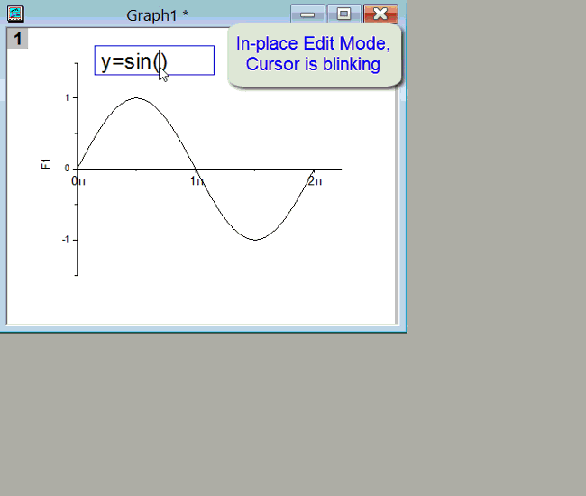
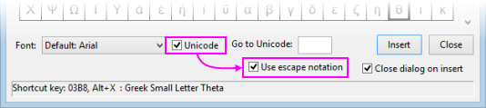
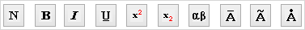

FAQ-148 Wie füge ich Sonderzeichen in Textbeschriftungen ein?
Insert-Greek-Symbols-in-Label
Letztes Update: 30.11.2022
Es gibt zwei Grundmethoden zum Einfügen von Sonderzeichen in Textbeschriftungen:
- Beim Erstellen von neuen Textobjekten fügen die meisten Benutzer Sonderzeichen und Formatierung mit Hilfe von direkten Bearbeitungsmethoden hinzu (Klick auf das Hilfsmittel Text
 oder Auswahl von Text hinzufügen im Kontextmenü).
oder Auswahl von Text hinzufügen im Kontextmenü).
- Bei existierenden Textobjekten hat der Anwender die Option, Sonderzeichen und Formatierung über den Dialog Eigenschaften des Textobjekts hinzuzufügen.
Unicode-Zeichen hinzufügen, Versionen 2018 und neuer
Um eine Textbeschriftung zu erstellen, klicken Sie auf das Hilfsmittel Text auf der Symbolleiste Hilfsmittel und dann auf den Punkt im Diagramm, Arbeitsblatt etc., an dem Sie eine Beschriftung hinzufügen möchten. Sie befinden sich jetzt im direkten Bearbeitungsmodus.
- Wählen Sie eine Schriftart aus und geben Sie den Hexcode mit 4 zeichen für den Unicoded ein (z. B. 03B8 für θ) und drücken Sie ALT+X auf Ihrer Tastatur.

- Klicken Sie mit der rechten Maustaste und wählen Sie Einfügen: Abbildung Symbole (2022b oder neuer) oder in den Versionen 2018 - 2022 nur Abbildung Symbole. Benutzer von neueren Versionen wählen ihre Zeichen von einer der Registerkarten des Dialogs; oder, falls sie den Dialog mit der erweiterten Abbildung Symbole verwenden (wird in älteren Versionen standardmäßig geöffnet), sie legen die Schrift nach Bedarf fest, lassen Unicode aktiviert, suchen das Zeichen und klicken auf Einfügen. Alternativ geben Sie eine Unicode-Sequenz mit 4 Zeichen im Feld Zu Unicode gehen ein und klicken auf Einfügen.

Hinweis: Versionen älter als Origin 2018 unterstützen Unicode nicht. Wenn Sie also planen, Ihre Arbeit, die Sie mit 2018 oder höher machen, mit Origin-Anwendern, die Versionen vor 2018 verwenden, zu teilen, sollten Sie (1) Ihre Unicode-Zeichen mit Hilfe von Abbildung Symbole (Erweitert) (nicht Abbildung Zeichen) eingeben und (2) sicherstellen, dass das Kontrollkästchen Escape-Notation verwenden unten im Dialog aktiviert ist. Zuletzt speichern Sie Ihre Projektdatei als ein OPJ, nicht als eine OPJU-Datei (Origin 2023 und höhere Versionen können nicht in eine OPJ-Datei schreiben, aber Sie können einzelne Fensterdateien wie OGG, OGW etc. noch immer teilen).
-

|
Sonderzeichen hinzufügen, Versionen 2017 und älter
- Markieren Sie bei aktivem direkten Bearbeitungsmodus den Text, den Sie fett, kursiv etc. anzeigen möchten, und klicken Sie dann auf eine der Schaltflächen auf der Symbolleiste Format. Oder klicken Sie auf die gewünschte Schaltfläche und geben dann Ihr(e) Zeichen ein.

- Alternativ können Sie klicken, um ein vorhandenes Textobjekt auszuwählen, dann mit der rechten Maustaste klicken und Eigenschaften wählen. Dadurch gelangen Sie in den Dialog Textobjekt, in dem Sie das obere Bedienfeld zum Bearbeiten oder Auswählen des Textes verwenden und auf die Schaltflächen der Symbolleiste Format oberhalb des Bearbeitungsfelds klicken können.
-
-

- Klicken Sie auf die Schaltfläche Abbildung Symbole
 auf der rechten Seite des Dialogs Textobjekt (Eigenschaften). Wählen Sie die Schriftart auf, dann das gewünschte Zeichen und klicken Sie auf Einfügen. Wählen Sie Ihre Schriftart, aktivieren Sie das Kontrollkästchen Unicode und geben Sie den Hexcode mit vier Zeichen für das Symbol im Feld Zu Unicode gehen ein. Prüfen Sie, dass das ausgegebene Symbol korrekt ist, und klicken Sie auf Einfügen. Beachten Sie, dass, auch wenn Sie das Kästchen Unicode aktiviert haben, Origin Zeichen noch immer mit einer voranstehenden Escape-Sequenz einfügt, wodurch die Zeichen mit älteren Versionen von Origin kompatibel werden.
auf der rechten Seite des Dialogs Textobjekt (Eigenschaften). Wählen Sie die Schriftart auf, dann das gewünschte Zeichen und klicken Sie auf Einfügen. Wählen Sie Ihre Schriftart, aktivieren Sie das Kontrollkästchen Unicode und geben Sie den Hexcode mit vier Zeichen für das Symbol im Feld Zu Unicode gehen ein. Prüfen Sie, dass das ausgegebene Symbol korrekt ist, und klicken Sie auf Einfügen. Beachten Sie, dass, auch wenn Sie das Kästchen Unicode aktiviert haben, Origin Zeichen noch immer mit einer voranstehenden Escape-Sequenz einfügt, wodurch die Zeichen mit älteren Versionen von Origin kompatibel werden.
 |
Es gibt keine Schaltfläche für Zirkumflex bzw. ("^") auf der Seite Text des Dialogs Textobjekt, aber Sie können "^" oberhalb eines Zeichens eingeben, indem Sie:
- Geben Sie 0302 ein.
- Drücken Sie ALT+X.
- Drücken Sie die Taste mit dem nach links zeigenden Pfeil auf der Tastatur.
- Geben Sie das Basiszeichen ein.
Dies ist zugegebenermaßen mühsam. Sollten Sie also viele dieser Zeichen erstellen müssen, überlegen Sie, ob es Sinn macht, unsere kostenlose App LaTeX zu installieren (klicken Sie auf Apps hinzufügen in der Apps-Galerie und suchen Sie nach "latex").
|
Schlüsselwörter:Unicode, ALT+X, Griechisch, ASCII, Erweitertes ASCII, ANSI, Mü, Pi, Delta, Alpha, Beta, Epsilon, Lambda, Grad, hochgestellt, tiefgestellt, erweiterte Zeichen, Escape-Sequenz, diakritische Zeichen, Tilde, Punkt, Rich Text, Angström, Mathematik, Umlaut, Diärese, akut, Tilde, Akzent, Makron, Zirkumflex, Planck